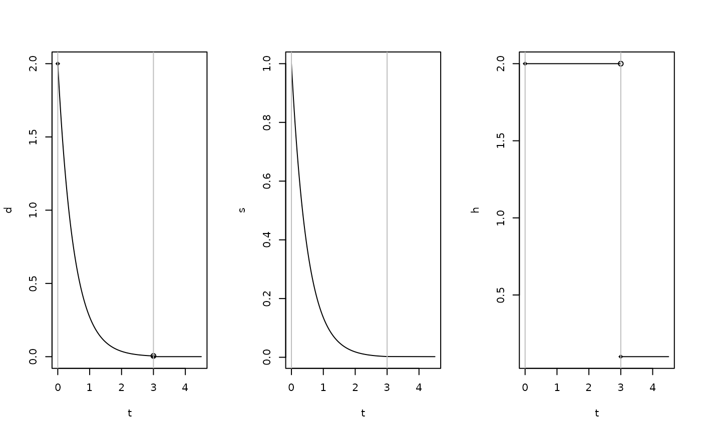
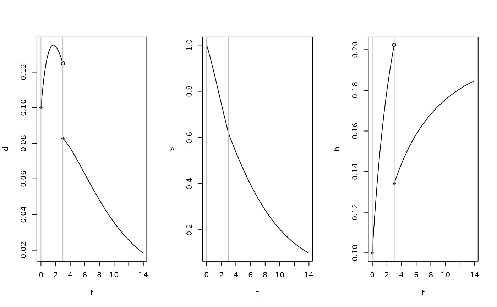

miniPCH class
Usage
# S3 method for class 'miniPCH'
plot(
x,
...,
what = c("d", "s", "h"),
from,
to,
mfrow = c(1, length(what)),
n = 1001
)
# S3 method for class 'miniPCH'
summary(object, ...)
# S3 method for class 'miniPCH'
print(x, ...)
# S3 method for class 'miniPCH'
autoplot(object, ..., what = c("d", "s", "h"), from, to, n = 1001)Value
for plot: NULL, invisibly
for summary: a list
for print: the printed text, invisibly
for autoplot: a ggplot object
Details
The layout in print uses the mfrow argument to par and defaults to all plots in one row. The layout can be overwritten by passing the mfrow argument, that is passed as is to an internal call to par.
Functions
summary(miniPCH): summaryprint(miniPCH): printingautoplot(miniPCH): autoplot with ggplot
Examples
my_pch <- pch_functions(c(0, 3), c(2, 0.1))
Tint <- c(0,3)
Q <- array(
c(
-0.3, 0 , 0,
0.2, -0.4, 0,
0.1, 0.4, 0,
-0.3, 0 , 0,
0.2, -0.2, 0,
0.1, 0.2, 0
), dim=c(3,3,2)
)
pi <- c(1,0,0)
abs <- c(0,0,1)
my_obj <- multistate_functions(Tint, Q, pi, abs)
plot(my_pch)

summary(my_pch)
#> $t
#> [1] 0 3
#>
#> $lambda
#> [1] 2.0 0.1
#>
#> $discrete
#> [1] FALSE
#>
print(my_pch)
#> A miniPCH object
#> describing a survival distribution with piecewise constant hazards defined on 2 time intervals:
#> [0, 3), [3, Inf)
#> and hazards:
#> 2, 0.1
plot(my_obj)

summary(my_obj)
#> $t
#> [1] 0 3
#>
#> $Q
#> , , 1
#>
#> [,1] [,2] [,3]
#> [1,] -0.3 0.2 0.1
#> [2,] 0.0 -0.4 0.4
#> [3,] 0.0 0.0 0.0
#>
#> , , 2
#>
#> [,1] [,2] [,3]
#> [1,] -0.3 0.2 0.1
#> [2,] 0.0 -0.2 0.2
#> [3,] 0.0 0.0 0.0
#>
#>
#> $pi
#> [1] 1 0 0
#>
#> $abs
#> [1] 0 0 1
#>
print(my_obj)
#> A miniPCH object
#> describing a distibution for time to absorption with 3 states and 1 absoribing states and piecewise constant transition rates on 2 time intervals:
#> [0, 3), [3, Inf)
library(ggplot2)
autoplot(my_pch)
autoplot(my_obj)